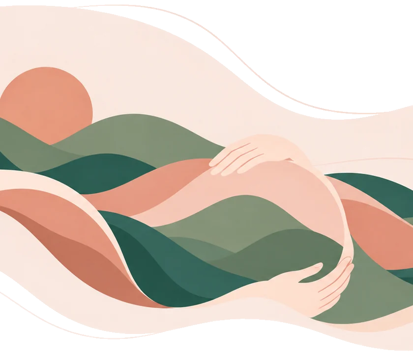
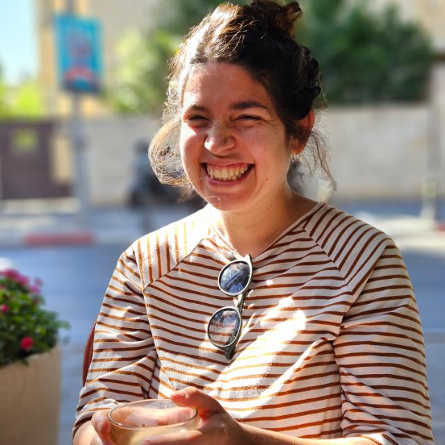

ליווי ועיבוד לידה | מלווה BOT
מרחב בטוח וקשוב
אני הגר טלמון, עובדת סוציאלית MSW ומלווה בגישת B.O.T. אני מציעה ליווי רגשי לנשים וזוגות בהכנה רגשית לקראת לידה, בעיבוד חוויית לידה ובמעבר להורות.
אני מאמינה שכל אדם ראוי להיות נראה, נשמע ומובן – ושמהמקום הזה מתחילה צמיחה. לכל אישה ולכל זוג מגיע מרחב בטוח ומכיל, שבו אפשר לעצור, לשתף, להקשיב ולהבין את מה שעובר עליכם בתקופה המשמעותית הזו.
במשך שנים עבדתי עם צעירות ואימהות, וראיתי פעם אחר פעם עד כמה המפגש הבינאישי הקרוב והמאפשר יכול ליצור תנועה.
הליווי מתאים למי שרוצה להתכונן ללידה, לעבד חוויות ורגשות שנותרו אחריה, להתמודד עם אתגרי תקופת ההורות הראשונית ולתת מקום לשאלות, לחששות ולשינויים שמביאה איתה האימהות.
במפגשים משולבים הקשבה רגישה, זיהוי כוחות ומשאבים ופיתוח דרכי התמודדות שיסייעו בחיזוק תחושת הביטחון והמסוגלות בתוך המעבר להורות.


השכלה ורקע מקצועי
- תואר ראשון בעבודה סוציאלית
- תואר שני בעבודה סוציאלית
- הכשרת בסיס B.O.T
אורך התהליך יותאם לצורך העולה מכל אישה או זוג.
הקליניקה ממוקמת בדרום תל אביב, או במפגשים אונליין.
יצירת קשר
אשמח להכיר אותך
הצעד הראשון הוא שיחה קצרה ולא מחייבת. כל מה שנאמר נשאר בסודיות.
- טלפון050-000-0000
- אימיילhello@example.com
- וואטסאפשליחת הודעה
- מיקוםקליניקה פרטית ומפגשים באונליין